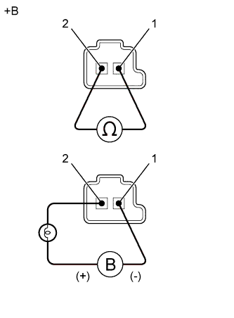

DTC P2757 Характеристика электромагнитного клапана регулирования давления муфты гидротрансформатора (электромагнитного клапана переключения передач SLU) |
| Код DTC | Условие обнаружения DTC | Неисправный участок |
| P2757 | Отсутствие блокировки в диапазоне блокировки (в нормальном режиме движения при скорости 80 км/час (50 миль в час)), либо сохранение блокировки включенной в диапазоне отключения блокировки (логика диагностирования за 2 поездки). |
|
| ACTIVE TEST |
Прогрейте двигатель.
Выключите зажигание.
Подсоедините портативный диагностический прибор к DLC3.
Включите зажигание (IG).
Включите портативный диагностический прибор.
Войдите в следующие меню: Powertrain / ECT / Active Test.
В соответствии с указаниями на дисплее выполните диагностику в режиме ACTIVE TEST.
| Информация на дисплее прибора | Испытываемое устройство | Диапазон регулирования | Замечание по диагностике |
| Activate the Lock Up | Управление электромагнитным клапаном переключения передач SLU с целью перевода автоматической трансмиссии в состояние блокировки гидротрансформатора | ON (ВКЛ) или OFF (ВЫКЛ) | Можно проверить работу электромагнитного клапана переключения передач SLU. [Состояние автомобиля]
|
Слегка нажмите педаль акселератора и убедитесь, что резкого изменения частоты вращения коленчатого вала двигателя не происходит.
| 1.ПРОВЕРЬТЕ, ОТОБРАЖАЮТСЯ ЛИ ДРУГИЕ DTC (ПОМИМО DTC P2757) |
Подсоедините портативный диагностический прибор к DLC3.
Включите зажигание (IG).
Включите портативный диагностический прибор.
Войдите в следующие меню: Powertrain / ECT / Trouble Codes.
С помощью диагностического прибора считайте коды DTC.
| Результат | Следующий шаг |
| Отображается только код P2757 | А |
| Помимо кода P2757 отображаются другие DTC | B |
|
| ||||
| А | |
| 2.ПРОВЕРЬТЕ ЭЛЕКТРОМАГНИТНЫЙ КЛАПАН ПЕРЕКЛЮЧЕНИЯ ПЕРЕДАЧ SLU |
|  |
Снимите электромагнитный клапан переключения передач SLU.
Измерьте сопротивление в соответствии со значениями, приведенными в таблице ниже.
| Контакты для подключения диагностического прибора | Условие | Заданные условия |
| 1 - 2 | 20°C (68°F) | 5,0-5,6 Ом |
Подайте в электромагнитный клапан переключения передач напряжение аккумуляторной батареи 12 В и убедитесь в том, что клапан приводится в движение, издавая характерный для этого звук.
| Условия измерений | Заданные условия |
| Клапан приводится в движение, издавая характерный звук. |
| *a | Устройство с неподсоединенным жгутом проводов (электромагнитный клапан переключения передач SLU) |
|
| ||||
| OK | |
| 3.ПРОВЕРЬТЕ КОРПУС КЛАПАНОВ ТРАНСМИССИИ В СБОРЕ |
Проверьте корпус клапанов трансмиссии в сборе (Нажмите здесь).
|
| ||||
| OK | |
| 4.ПРОВЕРЬТЕ МУФТУ ГИДРОТРАНСФОРМАТОРА В СБОРЕ |
Проверьте муфту гидротрансформатора в сборе (Нажмите здесь).
|
| ||||
| OK | ||
| ||